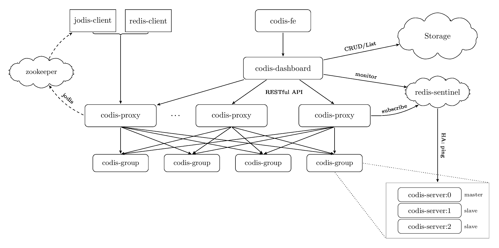
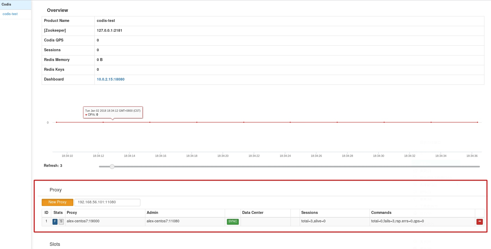

简单的介绍：
CacheCloud：
CacheCloud是由souhutv开源一套Redis的管理系统，可以帮助我们自动化的搭建和运维Redis，Cachecloud可以自动部署和管理3种形式的Redis方案，包括单实例Redis，Redis+Sentinel以及Redis的原生集群方案Redis Cluster
Codis：
Codis是由豌豆荚开源的一套Redis集群方案，是通过proxy路由到不同分片来实现的redis集群
Codis安装：
1. 安装Go环境
在Go语言的下载页面选择一个你要使用的安装包下载。我选择的是1.9.2版本。
```shell
wget https://redirector.gvt1.com/edgedl/go/go1.9.2.linux-amd64.tar.gz
```
修改/etc/profile文件
```shell
export GOROOT=/data/go/
export PATH=$PATH:/$GOROOT/bin
```
重新加载/etc/profile
```shell
source /etc/profile
```
查看Go是否安装成功
```shell
$ go version
go version go1.9.2 linux/amd64
```
2. 安装Codis
首先我们需要知道`GOPATH`的路径
```shell
$ go env GOPATH
/root/go
```
Go安装成功后，GOPATH会在`～/go`目录下，我这值我们也可以进行修改，比如，修改为`/data/gopath`
```shell
export GOPATH=/data/gopath
```
然后我们需要将codis的代码`clone`到指定的目录下
```shell
$ mkdir -p $GOPATH/src/github.com/CodisLabs
$ cd $GOPATH/src/github.com/CodisLabs
$ git clone https://github.com/CodisLabs/codis.git -b release3.2
```
获取到源码后，我们只需要`make`一下就可以了
```shell
$ cd codis
$ make
make -j4 -C extern/redis-3.2.11/
make[1]: 进入目录“/data/gopath/src/github.com/CodisLabs/codis/extern/redis-3.2.11”
cd src && make all
...
```
在这个过程中你可能需要安装一些工具，比如
```shell
yum groupinstall "Development Tools"
```
在安装过程中可能会遇到如下的错误
> zmalloc.h:50:31: 致命错误：jemalloc/jemalloc.h：没有那个文件或目录
这是因为没有找到`jemalloc`内存管理器的缘故，
我们可以在编译的时候指定其他的内存管理
```shell
make MALLOC=libc
```
但是相比`jemalloc`，其他的内存管理器可能会造成更多的内存碎片（`mem_fragmentation_ratio`）
当然，为了更好的性能，我们自然会选择`jemalloc`，那么我们就需要安装`jemalloc`了，但是如果我们现在使用`yum`安装，可以依然会编译`codis`报错，因为`jemalloc`没有被安装到指定的目录，而在`redis`的安装包里`redis`自己就为我们提供一个`deps`目录，里面就有`jemalloc`和其他一些依赖的安装包。
但是`codis`的目录下为我们提供了多个版本的`redis`，我们需要使用那个呢？
刚才我们在`make`的时候，第一行输出是
```shell
make -j4 -C extern/redis-3.2.11/
```
这里我们就可以进入该目录，直接编译deps下的所有依赖
```shell
cd extern/redis-3.2.11/deps
make hiredis jemalloc linenoise lua geohash-int
```
再次回到原目录，编译成功
启动Codis：
启动Codis会用到zk或者etctd，这里我使用的是zk
安装JDK和ZOOKEEPER`
可以直接使用yum`安装
yum install java-1.8.0-openjdk java-1.8.0-openjdk-devel
安装完JDK记得要配置环境变量，不然可能会导致一些程序不可用
vim /etc/profile
#set java environment
JAVA_HOME=/usr/lib/jvm/java-1.8.0-openjdk-1.8.0.151-1.b12.el6_9.x86_64
PATH=$PATH:$JAVA_HOME/bin
CLASSPATH=.:$JAVA_HOME/lib/dt.jar:$JAVA_HOME/lib/tools.jar
export JAVA_HOME CLASSPATH PATH
加载一下配置文件source /etc/profile
ZOOKEEPER需要从官网下载安装包，我部署的是单节点的，解压后直接启动就可以
wget http://mirror.bit.edu.cn/apache/zookeeper/zookeeper-3.4.11/zookeeper-3.4.11.tar.gz
tar -zxf zookeeper-3.4.11.tar.gz
cd zookeeper-3.4.11/conf
cp zoo_sample.cfg zoo.cfg
cd zookeeper-3.4.11/bin
./zkServer.sh start
配置与启动

如上图，Codis集群架构可以分为几个部分
最核心的是codis-dashboard和codis-proxy
codis-dashboard是codis的集群管理工具，可以管理codis-proxy、codis-server和Redis-sentinelcodis-proxy负责codis集群中的代理工作，负责将redis命令路由到不同的分片codis-fe是codis-dashboard的web管理界面，可以更方便、更形象的管理集群codis-serer是在redis-server基础上增加了codis相关命令而形成的另一个分支
现在我们要启动Codis
我们先进入codis的配置文件目录/data/gopath/src/github.com/CodisLabs/codis/config修改codis-dashboard的配置文件，codis-dashboard默认使用filesystem作为外部存储，我们将其修改为zookeeper。
然后将product_name修改为该我们的codis集群的名字，这里我们改成codis-test
# Set Coordinator, only accept "zookeeper" & "etcd" & "filesystem".
# for zookeeper/etcd, coorinator_auth accept "user:password"
# Quick Start
# coordinator_name = "filesystem"
# coordinator_addr = "/tmp/codis"
coordinator_name = "zookeeper"
coordinator_addr = "127.0.0.1:2181"
#coordinator_auth = ""
# Set Codis Product Name/Auth.
product_name = "codis-test"
product_auth = ""
现在启动codis-dashboard
nohup ./bin/codis-dashboard --ncpu=4 --config=config/dashboard.toml --log=logs/dashboard.log --log-level=WARN &
这里我新建了一个logs目录来存放日志
codis-proxy也有相应的配置文件，这里我只是简单的修改了一下product_name，然后启动相关的服务
# 启动 codis-proxy
nohup ./bin/codis-proxy --ncpu=4 --config=config/proxy.toml --log=logs/proxy.log --log-level=WARN &
# 启动 codis-fe，这里监听的是8080端口
nohup ./bin/codis-fe --ncpu=4 --log=logs/fe.log --log-level=WARN --zookeeper=127.0.0.1:2181 --listen=0.0.0.0:8080 &
现在我们已经可以访问管理页面了
进入管理界面中，我们先添加一个proxy

接下来我们就可以添加codis-server和sentinel了，但是在那之前，我们先安装一下CacheCloud
安装CacheCloud：
我们先从gayhub github上 的获取源码
cd /opt
git clone https://github.com/sohutv/cachecloud.git
由于程序需要用到maven，我们需要先安装maven
wget http://repos.fedorapeople.org/repos/dchen/apache-maven/epel-apache-maven.repo -O /etc/yum.repos.d/epel-apache-maven.repo
yum -y install apache-maven
现在我们需要修改一下配置文件，配置一下使用的mysql和监听的端口
$ vim /opt/cachecloud/cachecloud-open-web/src/main/swap/online.properties
cachecloud.db.url = jdbc:mysql://127.0.0.1:3306/cache-cloud
cachecloud.db.user = admin
cachecloud.db.password = 123456
cachecloud.maxPoolSize = 20
isClustered = true
isDebug = false
spring-file=classpath:spring/spring-online.xml
log_base=/opt/cachecloud-web/logs
web.port=8585
log.level=WARN
启动cachecloud
# 进入cachecloud的根目录
cd /opt/cachecloud
# 运行maven
mvn clean compile install -Ponline
# 新建cachecloud-web目录
mkdir /opt/cachecloud-web
# 拷贝war包、配置文件和启动脚本
cp /opt/cachecloud/cachecloud-open-web/target/cachecloud-open-web-1.0-SNAPSHOT.war /opt/cachecloud-web
cp /opt/cachecloud/cachecloud-open-web/src/main/resources/cachecloud-web.conf /opt/cachecloud-web
cp /opt/cachecloud/script/st*.sh /opt/cachecloud-web
# 初始化数据库
mysql -uadmin -p -D'cache-cloud' < /opt/cachecloud/script/cachecloud.sql
# 启动
sh /opt/cachecloud-web/start.sh
如果你发现启动脚本运行的时间很长，可能是已经报错了，tail一下日志
如果报Unrecognized VM option 'UnlockCommercialFeatures'的错误，在启动脚本中将-XX:+UnlockCommercialFeatures -XX:+FlightRecorder去掉即可
使用CacheCloud和配置Redis：
在cachecloud的script目录下有一个初始化脚本cachecloud-init.sh
这个脚本有3个作用：
- 创建cachecloud项目的用户
- 创建cachecloud项目的相关目录
- 安装redis
将这个脚本拷贝到需要管理的机器上，然后执行
./cachecloud-init.sh username
此处的username是你用于创建管理redis的用户名
执行后，你需要输入两次密码
使用管理员账号进入web管理页面，在管理后台>机器管理中添加我们初始化后的机器
接着，我们可以使用任意账号在应用申请界面申请redis服务
cachecloud提供3种redis服务
- 单节点redis
- Redis-Sentinel
- 原生的Redis-Cluster集群
申请了我们需要的redis服务之后，管理员就可以在管理后台>流程审批界面分配redis服务了
使用CacheCloud配置Codis集群
为codis添加redis-server
值得注意的是，Codis集群不能直接使用Redis-Server，我们需要使用codis安装目录下的codis-server替换掉PATH路径下的redis-server
cp codis-server /usr/bin/redis-server
cp codis-server /usr/local/bin/redis-server
这样我们使用CacheCloud创建的就是codis-server了
现在我们在CacheCloud中创建两个单节点redis，然后在管理后台>流程审批>应用运维中为两个redis分别配置slave
现在我们得到了两对redis主从，然后我们进入Codis的管理界面，在Group中将这两对主从添加为两组Group，再在Slots中点击Reblance All Slots
至此Codis集群就搭建完成了
现在我们为Codis集群添加Sentinel
为什么要手动启动sentinel
需要说明的一点是，我们可以在CacheCloud中可以直接配置Redis-Sentinel集群，似乎我们直接在CacheCloud中配置好Redis-Sentinel集群，然后将配置好的redis和sentinel添加到codis中，这样更简单。但是这样做是不可行的。
正常情况下，添加了sentinel的codis集群在redis-server主节点宕机后，codis-proxy会自动failover到redis-server从节点。
但是，但是如果codis添加的是通过cachecloud生成的sentinel，则由于cachecloud和codis都对sentinel进行了配置，导致sentinel对同一套主从侦测了两次，在redis-server主节点宕机后，sentinel的cachecloud配置生效，而codis配置不生效，所以codis-proxy无法正常failover。
所以在cachecloud和codis联合使用时，不要在codis中配置cachecloud生成的sentinel。
而为codis单独配置sentinel也很简单。
添加sentinel
首先创建一个简单的配置文件
$ vim sentinel.conf
port 26379
dir /tmp
protected-mode no # 较早的redis版本不需要该参数
然后启动sentinel
redis-server sentinel.conf --sentinel &
然后我们添加sentinel的地址添加到codis配置页面的sentinels配置项中即可。